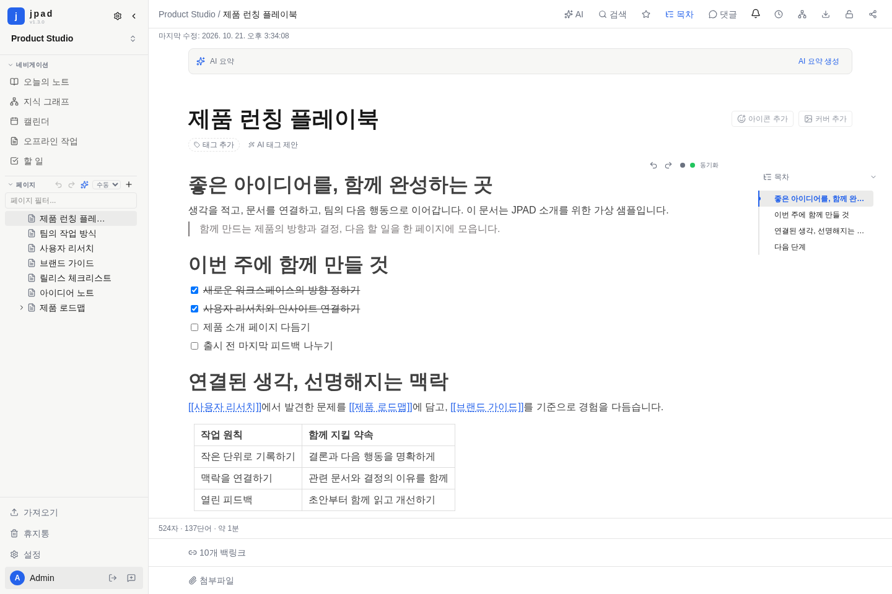
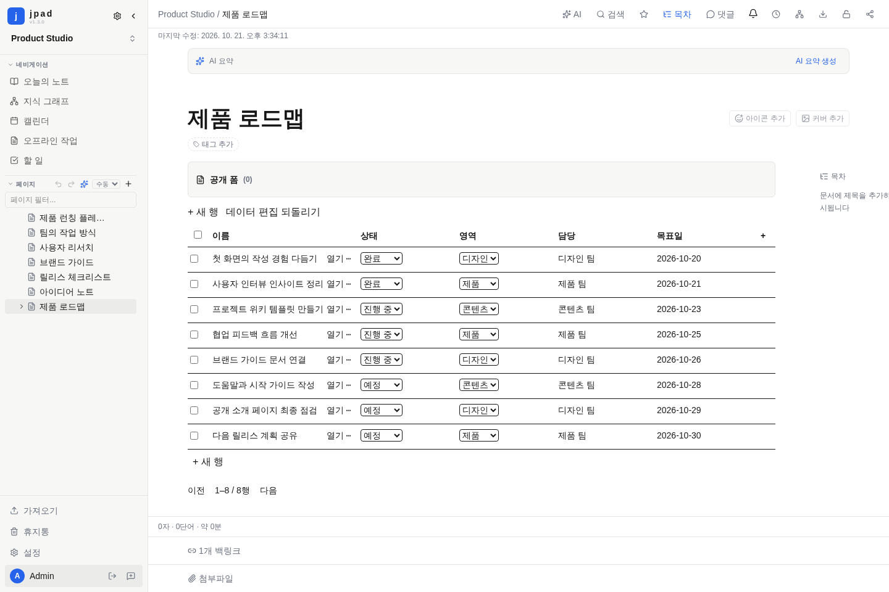
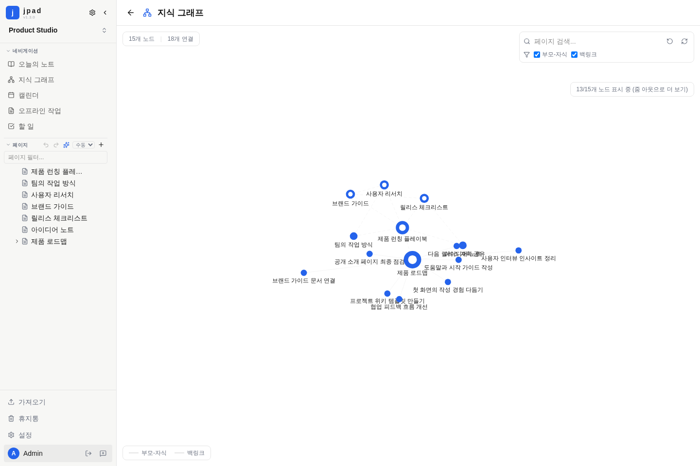

가볍게 시작하고
떠오르는 생각을 블록에 담으세요.
Markdown 입출력으로 기존 문서도
새로운 작업의 출발점이 됩니다.
흩어진 기록이
하나의 맥락이 되는 곳.

01 / ONE WORKSPACE
생각을 펼칠 때는 문서로,
정보를 정리할 때는 데이터베이스로,
관계를 살펴볼 때는 그래프로.
BlockNote 기반 블록 편집기로 글과 구조를 함께 만들고, Markdown으로 가져오거나 내보내세요.
문서와 데이터베이스를 함께 사용해 흩어진 정보를 모으고, 필요한 맥락을 한곳에서 관리하세요.

백링크로 이어진 문서를 따라가고, 지식 그래프에서 기록 사이의 관계를 살펴보세요.

위 화면은 실제 앱에서 가상 샘플 데이터로 촬영했습니다.
02 / FROM A NOTE TO KNOWLEDGE
떠오르는 생각을 블록에 담으세요.
Markdown 입출력으로 기존 문서도
새로운 작업의 출발점이 됩니다.
데이터베이스로 정보를 구조화하고,
문서 링크와 백링크로
기록 사이의 연결을 만드세요.
Yjs 기반 실시간 공동 편집으로
같은 문서를 함께 다듬고,
팀의 지식으로 쌓아가세요.
03 / MADE FOR YOUR WORK
쓰기 좋은 공간에,
지식을 운영하는 데 필요한 도구를.
문서의 변경을 Git 이력으로 남겨, 지금의 기록이 만들어진 과정을 살펴볼 수 있습니다.
AI 보조 기능을 문서 작업에 활용하세요. 사용할 AI 공급자와 인증 정보는 별도 설정이 필요합니다.
SSO 연동과 권한 관리로 워크스페이스의 접근 방식을 구성하세요. 환경에 맞춘 인증 설정을 지원합니다.
JPAD는 자체 jpad License로 제공됩니다. 바이너리는 개인·상업적 용도로 무료로 사용할 수 있습니다. 소스 코드는 개인·교육·비상업적 용도로 사용할 수 있으며, 법인의 소스 코드 상업적 이용에는 사전 서면 허가가 필요합니다.
소스 코드 수정 시 통지하고, 재배포 시 30일 이내에 통지해야 합니다. 라이선스와 저작권 고지는 보존해야 합니다. 사용 전 전체 조건과 제3자 고지를 확인해 주세요.